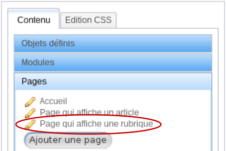
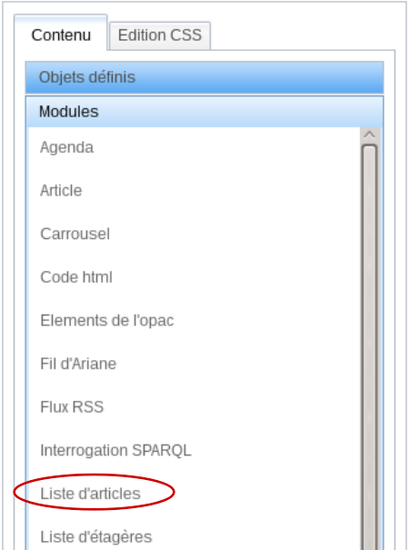

Exemples d'utilisation du menu construire
Pré-requis dans Portail > Contenu éditorial : Gestion⚓
Assurez vous d'avoir déjà quelques rubriques, sous-rubriques et articles dans votre arborescence.
Truc & astuce
Dans votre contenu éditorial, créez une rubrique à la racine qui s'appellera Menu. Elle servira à contenir les rubriques qui composeront votre menu sur le portail.
Afficher un carrousel des nouveautés sur la page d'accueil⚓
Cet exemple a pour objectif de vous guider dans la création d'un carrousel de notices sur la page d'accueil du portail.
Procédure
Pré-requis dans l'onglet Catalogue⚓
Dans PMB, une sélection de notices est réalisée à l'aide d'un panier. Ce panier, pour qu'il soit visible dans le portail, doit alimenter une étagère virtuelle. C'est cette dernière qui servira de source de données pour votre carrousel.
C'est pourquoi, avant de suivre la procédure décrite ci-dessous, assurez-vous d'avoir une étagère Nouveautés disponible et contenant des notices.
Remarque
Pour en savoir plus sur les paniers et étagères virtuelles, consultez l'aide de l'onglet Catalogue de ce même guide.
Dans l'onglet Portail ⚓
Pour créer un cadre du portail, il faut être dans le menu Portail > Construction : Construire.
Accéder à la page d'accueil de votre portail.
Dans le volet
Pages, cliquez sur l'intitulé de votre page d'accueil.Accéder à la page Accueil Si la page n'existe pas, vous pouvez la créer en utilisant le bouton
Ajouter une page.Pour en savoir plus sur la création d'une page, reportez vous à l'aide du menu
Portail>Construction : Pages.Créer le cadre qui contiendra le module
Liste de notices.Dans le volet
Modules, cliquez sur le moduleListe de notices.Créer un module Liste de notices Compléter les informations demandées.
Nom du Cadre: l'intitulé du cadre ne s'affiche pas sur le portail, il permet simplement de le différencier des autres cadres de votre portail.Cadre fixe ?: Dans cet exemple, le cadre ne sera présent que sur la page d'accueil. Il n'est donc pas à poser en cadre fixe.Conserver l'URL de construction ?: Cette option peut-être cochée. Cela permettra de revenir directement sur la page d'accueil quand on modifiera la module.Mode de mise en cache: gardezSelon les GET, POST et vues OPAC, qui vous permet d'avoir un cache sur ce cadre.Classe CSS: permet d'ajouter des classes au cadre, afin de mettre de la CSS dessus.Conditions d'affichageetChoisissez une Page: par défaut, laissez Accueil.Choisissez une source de donnée: Notices d'une étagère.Choisissez un sélecteur pour la source de donnéesetChoisissez une étagère: choisissezSélecteur manuel d'une étagèrece qui permet ensuite de choisir l'étagèreNouveautés.
Nombres d'éléments maximum à renvoyer: 10 notices maximums seront présentes dans le carrousel.En général, ne dépassez pas les 15 à 20 notices car plus vous en affichez, plus le temps de chargement de la page sera long.
Choisissez une vue: vue en carrousel responsive.Construction du lien vers une notice: il faut indiquer à PMB la page du portail qu'il chargera si un internaute clique sur une notice du carrousel.Pour un carrousel de notices vous pouvez laisser ce champ vide car la page qui affiche une notice est une page de l'OPAC.
-- Dans la partie Paramétrage Général : --
Mode d'affichage: horizontal, vertical ou fondu. Le fondu affiche une notice qui sera remplacée progressivement par sa suivante.Temps de la transition (en ms)etTemps de pause (en ms): le temps à indiquer ici est en millisecondes.Si vous voulez que les visiteurs aient un bon souvenir de votre portail, évitez d'avoir un carrousel trop rapide qui fatigue l'œil.
Nombre d'éléments maximum par page etNombre d'éléments minimum par page : nombre de notices affichées. Privilégiez le même nombre pour les deux afin d'avoir un carrousel stable et efficace.Nombre d'éléments déplacés: nombre de notices qui se déplacent.Largeur d'un élément (en px): taille d'une notice dans la page. Un nombre grand permet de fixer la taille au maximum de sa capacité.Démarrage automatique et Transition automatique: les notices se déplacent dans le carrousel sans action de la part de l'internaute.Pause au survol du curseur: lorsque la souris passe sur le carrousel, il se fige.Afficher le paginateur : option pour afficher les ronds cliquable sur le carrousel.Image à utiliser par défaut: Nom + extension de l'image à utiliser si la notice n'a pas de vignette. Le système va chercher l'image en priorité dans le dossier "images"qui se situe dans le dossier client.-- Dans la partie Paramétrage avancée : --
Marge entre les éléments (en px): espacement entre chaque notice.Démarrage aléatoire: la première notice du carrousel sera différente à chaque fois que l'on revient sur la page d'accueil.Temps avant le démarrage (en ms): laps de temps avant que le carrousel ne commence a à défiler.Sens de défilement: sens de déplacement du carrousel. Il est conseillé de faire déplacer un carrousel vers le suivant.Transition: effet donné au défilement (ex : linéaire , lent sur la fin , ... )Utiliser le title des balises img pour le titre: utiliser le titre de l'image comme titre à l'affichageAdapter automatiquement la hauteur: permet d'ajuster en temps réel la hauteur du carrousel suivant la hauteur de l'image et du titre.Temps de l'adaptation en hauteur (en ms): vitesse à laquelle s'adapte le carrousel en hauteur.Type de paginateur: il est conseillé de laisser complet.Séparateur pour le paginateur simple: caractère de séparation.Afficher Suivant/Précédent: option d'affichage des flèches sur les cotés du carrousel.Texte du bouton "Suivant" / "Précédent": libellé des flèches.Afficher Démarrer/Stop: ajouter des options de lecture sur le carrousel.Texte du bouton Démarrer / Stop: libellé des options de lecture.Afficher Démarer/Stop en toggle: afficher les options de lecture uniquement au survol du carrousel.Contenu du template: format d'affichage des notices du carrousel.Template de notice à utiliser pour le content: afficher les notices selon un template de notice.Les templates de notices sont paramétrés dans l'onglet
Editions>Templates : Notices.
Enregistrervotre nouveau module.Déplacer le cadre.
Votre cadre, après enregistrement, s'inscrit directement tout en haut de la zone
Main. Il est rendu visible par un liseré rouge. Vous ne voyez pas encore son contenu car il faut d'abord le placer dans votre page et l'enregistrer avant de le voir apparaître.Pour le déplacer, utilisez le système du glisser-déposer. Un rectangle bleu foncé vous indique où se placera votre module après avoir lâché le clic de votre souris.
Glisser-déposer un cadre Une fois votre cadre placé, vous pouvez enregistrer sa position en même temps que la structure de votre page en cliquant sur le bouton
Enregistrer.Enregistrer le placement des cadres Ajuster des propriétés CSS au cadre.
Dans le volet Objets définis, cliquez sur le nom de votre cadre dans
Cadres du portailpuis accédez à l'ongletEdition CSS.Modifier les propriétés CSS du cadre Dans les propriétés CSS, vous pouvez modifier le placement de votre cadre.
Modification de marge haute Après avoir effectué vos modifications, n'oubliez pas d'enregistrer.
Attention
Il est toujours préférable d'ajouter le style dans une feuille de style CSS plutôt que via cet onglet.
Afficher un menu dans votre portail⚓
Vous pouvez créer un menu dans votre site en utilisant deux modules possibles : menu et liste de rubriques. Dans cet exemple, ce sera le module liste de rubriques.
Procédure
Afin de créer votre cadre, rendez-vous dans Portail > Construction : Construire.
Accéder à la page d'accueil de votre portail.
Dans le volet
Pages, cliquez sur l'intitulé de votre page d'accueil.Truc & astuce
Il n'est pas nécessaire d'être sur la page d'accueil pour créer votre menu car il sera présent sur toutes les pages de votre portail. Néanmoins, la création de votre site commence par l'accueil, il est donc logique que vous commenciez par placer vos éléments fixes sur l'accueil.
Créer le cadre qui contiendra le module
Liste de rubriques.Dans le volet
Modules, cliquez sur le moduleListe de rubriques.Compléter les informations demandées.
Nom du Cadre: l'intitulé du cadre ne s'affiche pas sur le portail, il permet simplement de le différencier des autres cadres de votre portail.Cadre fixe ?: dans cet exemple, le cadre sera fixe puisqu'il sera présent sur l'ensemble du portail.Conserver l'URL de construction: ce module n'étant pas que sur une seule page, il ne peux être renvoyé vers celle-ci quand il est modifié. Il ne faut donc pas le cocher.Mode de mise en cache: gardezSelon les GET, POST et vues OPAC, qui vous permet d'avoir un cache sur ce cadre.Classe CSS: permet d'ajouter des classes au cadre, afin de mettre de la CSS dessus.Conditions d'affichage: ne rien choisir.Choisissez une Page: supprimer la condition en utilisant la croix . Le cadre est présent sur toutes les pages, cette condition n'est donc pas utilisée.Type de page de l'OPAC: supprimer la condition en utilisant la croix . Le cadre est présent sur toutes les pages, cette condition n'est donc pas utilisée.Choisissez une source de donnée: Rubriques Parentes.Choisissez un sélecteur pour la source de données: Sélecteur d'une ou plusieurs rubriques parentes.Choisissez une ou plusieurs rubriques: choisissezMenu. Ainsi, si une sous-rubrique est créée dans la rubrique Menu, elle s'affichera automatiquement dans le menu de votre portail.Maintenez la touche
Ctrlappuyée pour sélectionner plusieurs rubriques.
Trier par: position dans l'arbre du contenu éditorial. Cela permet de modifier l'ordre des rubriques dans le contenu éditorial par glisser-déposer afin d'agir sur leur ordre d'affichage dans votre portail.Ordre du tri: croissant ou décroissant.Nombres d'éléments maximum à renvoyer: vous pouvez laisser vide. Dans ce cas toutes les rubriques créées dans la rubrique Menu seront visibles.Choisissez une vue: Liste de rubriques - template Django avec lien.Construction du lien pour les rubriques: Page qui affiche une rubrique. Ce paramètre permet d'indiquer que lorsque l'internaute cliquera sur une rubrique du menu, il sera dirigé vers la page qui affiche une rubrique.Variable à utiliser: identifiant de la rubrique. Ce paramètre, combiné au précédent, permet de désigner quelle variable d'environnement sera passée dans l'URL afin d'afficher le contenu de la page.
Contenu du template: le template proposé par défaut affihce beaucoup d'informations sur les rubriques. Voici un template minimum conseillé :<div>{% for section in sections %}<h3><a href="{{section.link}}">{{section.title}}</a></h3>{% endfor %}</div>
Cadre Liste de rubrique Enregistrervotre nouveau module.Déplacer le cadre.
Truc & astuce
Le contenu de la zone Main est variable, il change d'une page à l'autre. Votre menu est un cadre fixe, placez le plutôt dans la zone
Introduction(menu horizontal) ou les zonesbandeauoubandeau_2(menu vertical).Enregistrerle positionnement.
Afficher un cadre rubrique dans la page rubrique⚓
La page rubrique est souvent une page de transition : elle permet d'indiquer les sous-rubriques et les articles qui la composent. Néanmoins, elle peut, elle-même, proposer du contenu informationnel. C'est le cadre Rubrique qui vous permettra d'afficher ces informations rédactionnelles.
Procédure
Afin de créer votre cadre, rendez-vous dans Portail > Construction : Construire.
Accéder à la page "Page qui affiche une rubrique" de votre portail.
Dans le volet
Pages, cliquez sur l'intitulé de votre page article.Créer le cadre qui contiendra le module
Rubrique.Dans le volet
Modules, cliquez sur le moduleRubrique.Compléter les informations demandées.
Nom du Cadre: l'intitulé du cadre ne s'affiche pas sur le portail, il permet simplement de le différencier des autres cadres de votre portail.Cadre fixe ?Le cadre n'est pas présent sur tout le site.Conserver l'URL de construction ?: Le cadre sera présent uniquement sur cette page. Il est possible de cocher cette case pour renvoyer la page quand le cadre sera édité.Mode de mise en cache: gardezSelon les GET, POST et vues OPAC, qui vous permet d'avoir un cache sur ce cadre.Classe CSS: permet d'ajouter des classes au cadre, afin de mettre de la CSS dessus.Conditions d'affichage: ne rien faire, par défaut, PMB vous propose déjà les choix ci-dessous :Choisissez une Page: gardezPage qui affiche une rubrique,Type de page de l'OPAC: supprimer la condition en utilisant la croix . Le cadre n'est pas présent sur une page de l'OPAC.
Choisissez un sélecteur pour la source de données: Sélecteur depuis une variable d'environnement. Ce choix permet d'utiliser ce cadre de manière générique. Ainsi à chaque fois que la pagePage qui affiche une rubriquesera affichée, ce cadre se remplira avec les informations de la rubrique demandée.Sélectionnez une variable d'environnement: identifiant de la rubrique. Ce paramètre permet de désigner quelle variable de la page sera récupérée dans l'URL afin d'afficher la bonne rubrique.
Construction du lien pour les rubriques: Page qui affiche une rubrique. Il faut donner à PMB la page qui doit être affichée si l'internaute clique sur une sous-rubrique.Variables à utiliser: identifiant de la rubrique. L'identifiant de la sous-rubrique sera transmise dans l'URL afin d'afficher à nouveau la pagePage qui affiche une rubriquemais avec le contenu de la sous-rubrique.
Construction du lien pour les articles: Page qui affiche un article. Lorsque l'internaute cliquera sur un article de la rubrique il sera dirigé sur la pagePage qui affiche un article.Variables à utiliser: identifiant de l'article. L’identifiant de l'article choisi par l'internaute sera transmise dans l'URL afin d'afficher le bon article.
Contenu du template: un template par défaut vous est proposé.Cadre Rubrique
Enregistrervotre nouveau module.Déplacer le cadre.
Enregistrervotre positionnement.Les informations ne s’affichent qu'après enregistrement de la page.
Pour vérifier le bon fonctionnement du cadre, utilisez votre menu de rubriques pour accéder à une rubrique.
Afficher une liste d'articles dans la page rubrique⚓
Il est nécessaire de prévoir, dans la page Page qui affiche une rubrique, des liens vers les sous-rubriques et des liens vers les articles contenus dans cette rubrique. Le but de cet exemple est de créer un cadre Liste d'articles qui affichera l'ensemble des articles de cette rubrique.
Procédure
Afin de créer votre cadre, rendez-vous dans Portail > Construction : Construire.
Accéder à la page rubrique de votre portail.
Dans le volet
Pages, cliquez sur l'intitulé de votre page rubrique.Si la page n'existe pas, vous pouvez la créer en utilisant le bouton
Ajouter une page.Pour en savoir plus sur la création d'une page, reportez vous à l'aide du menu
Portail>Construction : Pages.Volet PagesCréer le cadre qui contiendra le module
Liste d'articles.Dans le volet
Modules, cliquez sur le moduleListe d'articles.Volet ModulesCompléter les informations demandées.
Nom du Cadre: l'intitulé du cadre ne s'affiche pas sur le portail, il permet simplement de le différencier des autres cadres de votre portail.Cadre fixe ?Le cadre n'est pas présent sur tout le site.Conserver l'URL de construction ?: Le cadre sera présent uniquement sur cette page. Il est possible de cocher cette case pour renvoyer la page quand le cadre sera édité.Mode de mise en cache: gardezSelon les GET, POST et vues OPAC, qui vous permet d'avoir un cache sur ce cadre.Classe CSS: permet d'ajouter des classes au cadre, afin de mettre de la CSS dessus.Conditions d'affichage: ne rien faire, par défaut, PMB vous propose déjà les choix ci-dessous :Choisissez une Page: gardezPage qui affiche une rubrique,Type de page de l'OPAC: supprimer la condition en utilisant la croix . Le cadre n'est pas présent sur une page de l'OPAC.
Choisissez un sélecteur pour la source de données: Sélecteur depuis une variable d'environnement. Ce choix permet d'utiliser ce cadre de manière générique. Ainsi à chaque fois que la pagePage qui affiche une rubriquesera affichée, ce cadre se remplira avec les articles de la rubrique demandée.Sélectionnez une variable d'environnement: identifiant de la rubrique. Ce paramètre permet de désigner quelle variable de la page sera utilisée afin d'afficher les articles de la bonne rubrique.
Utiliser un filtre: les filtres servent à ne sélectionner que certains articles selon des critères prédéfinis. Dans cet exemple, ils ne sont pas nécessaires.Choisissez une vue: Liste d'articles - template Django avec lien.Construction du lien pour les articles: Page qui affiche un article. Ce paramètre permet d'indiquer que lorsque l'internaute cliquera sur un article, il sera dirigé vers la page qui affiche un article.Variable à utiliser: identifiant de l'article. Ce paramètre, combiné au précédent, permet de désigner quelle variable sera passée dans l'URL lors de la redirection vers la page article.
Contenu du template: un template minimum vous ait proposé. Il faut un peu le modifier, par exemple, pour ajouter un lien sur le titre afin d'accéder à la page article. Il faut remplacer la ligne<h3>{{article.title}}</h3>par<h3><a href="{{article.link}}">{{article.title}}</a></h3>.Vous pouvez aussi supprimer la ligne
<blockquote>{{article.content}}</blockquote>qui permet d'afficher le contenu de l'article. Afficher le résumé de l'article suffit, le lecteur cliquera sur l'article pour accéder au reste de l'article disponible sur la page qui affiche un article.
Enregistrervotre nouveau module.Déplacer le cadre.
Votre cadre, après enregistrement, s'inscrit directement tout en haut de la zone
Main. Il est rendu visible par un liseré rouge.Pour le déplacer, utilisez le système du glisser-déposer. Un rectangle bleu foncé vous indique ou se placera votre module après avoir lâché le clic de votre souris.
Déplacer le cadre Articles de la rubrique Une fois votre cadre placé, vous pouvez enregistrer son placement en même temps que la structure de votre page en cliquant sur le bouton
Enregistrer.Les informations ne s'affichent qu'après enregistrement de la page.
Pour tester si le cadre fonctionne, dans la zone de visualisation de droite, cliquez dans votre menu sur une rubrique qui contient au moins un article.